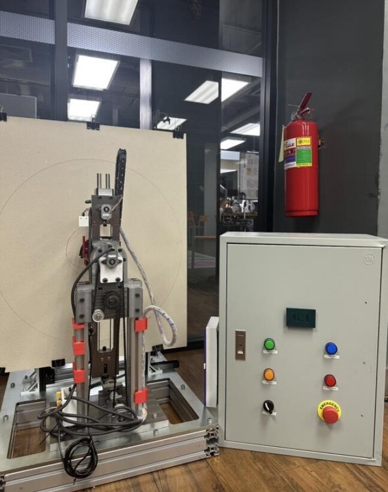
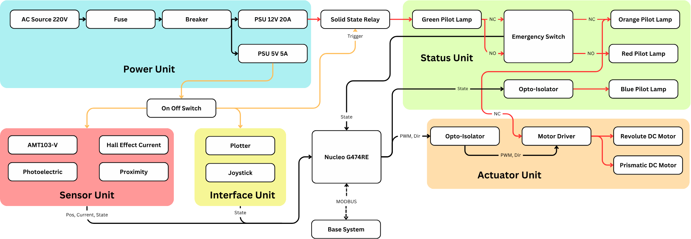
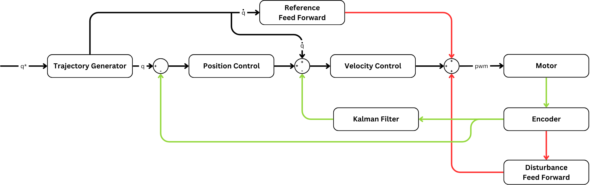

About the project
A 2-DOF plotting arm with one revolute and one prismatic joint that places a pen accurately in polar coordinates.
Both joints need precise, coordinated position control, driven from an STM32 with real-time MODBUS communication.
The machine is built like a small industrial cell. A control cabinet holds the power supplies, pilot lamps, switches, and an emergency stop, and every motor driver is opto-isolated from the controller.
Each joint runs cascaded position and velocity loops with feedforward, and a Kalman filter estimates velocity from the encoders. Steady-state error stays below 0.15 mm on the prismatic joint and below 0.5° on the revolute joint.
Process
Design the arm
The full mechanical structure and the electrical system were designed from scratch, with a control cabinet holding the pilot lamps, switches and emergency stop.
Build the hardware
A Nucleo G474RE reads AMT103-V encoders, a Hall effect current sensor, and photoelectric and proximity sensors. Opto-isolated motor drivers run the revolute and prismatic DC motors, and a solid state relay and emergency switch cut power safely.
Close the control loops
A trajectory generator feeds cascaded position and velocity loops, with reference feedforward and disturbance feedforward. A Kalman filter estimates joint velocity from the encoders.
Talk to the base system
MODBUS links the Nucleo to the base system in real time, while pilot lamps show the machine state.
Results
- Steady-state error stays below 0.15 mm on the prismatic joint.
- Steady-state error stays below 0.5° on the revolute joint.
Figures



System
| Controller | STM32 Nucleo G474RE |
|---|---|
| Joints | 1 revolute, 1 prismatic, each driven by a DC motor |
| Sensors | AMT103-V encoders, Hall effect current sensor, photoelectric and proximity sensors |
| Control | Cascaded position and velocity loops with feedforward and a Kalman filter |
| Safety | Emergency switch, solid state relay, opto-isolated drivers, status pilot lamps |
| Power | 220 V AC input to 12 V 20 A and 5 V 5 A supplies |
| Communication | MODBUS to the base system |